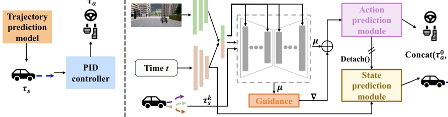
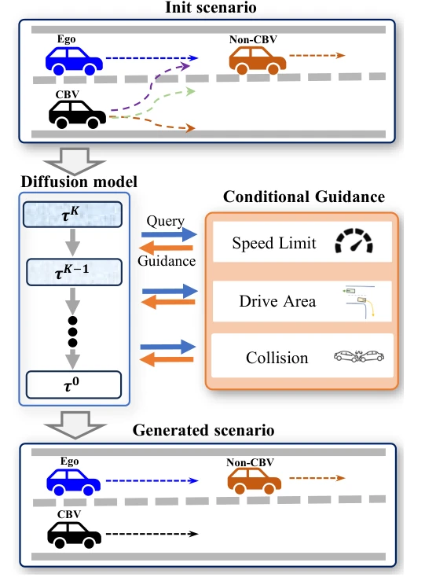
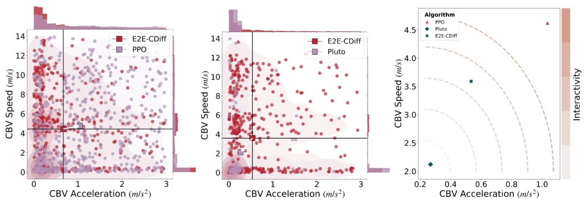
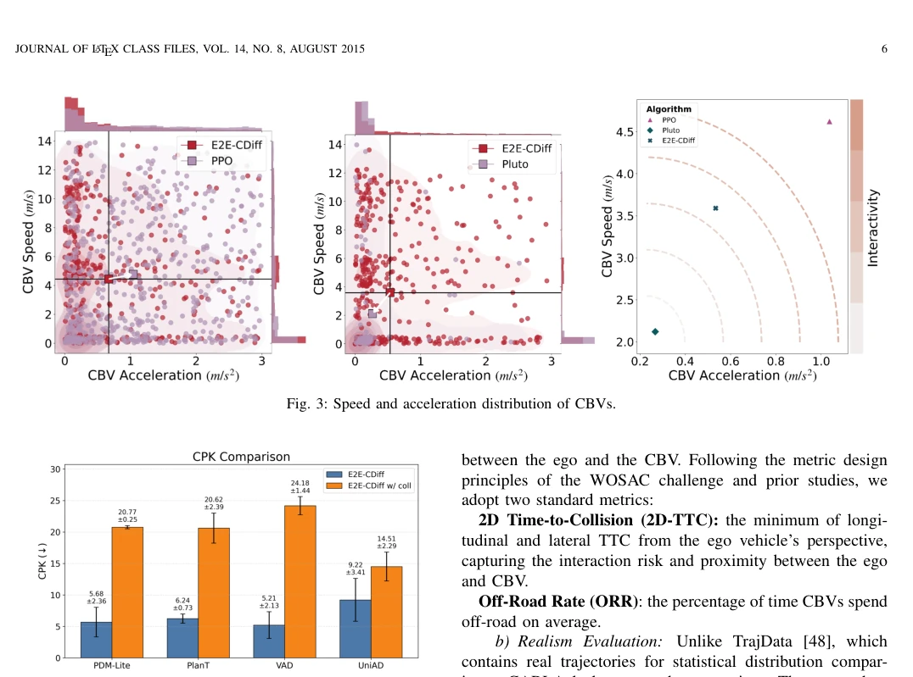
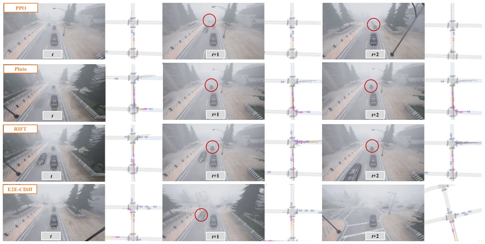
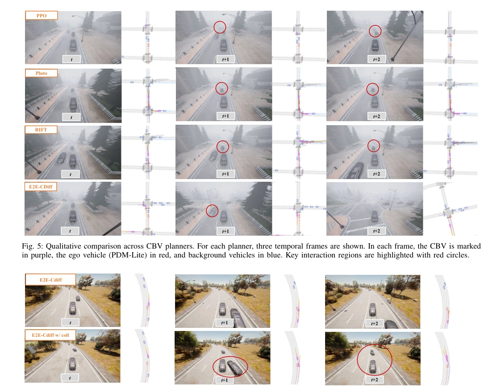
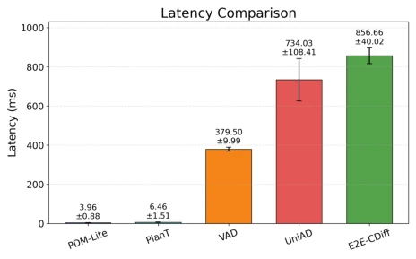
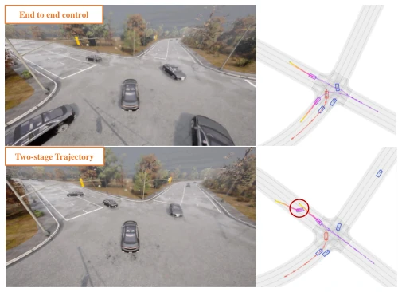

This paper adds another "diffusion" flame to the field of autonomous driving test scenario generation. E2E-CDiff attempts to address the traditional two-stage planning-control mismatch problem using an end-to-end state-action diffusion model, which sounds very appealing. By injecting speed, lane, and collision constraints during the denoising process through differentiable guidance, it indeed balances controllability and realism on Bench2Drive. However, do not get too excited too soon; the 856ms inference latency makes it almost unusable as an on-vehicle planner, qualifying only as an excellent "scenario generator". Although the authors boast about generalizability, essentially it still relies on pre-training and specific guidance, far from a true "world model". For test processes requiring rapid iteration, this model is a fun toy, but still has a long way to go before deployment.
研究动机Motivation
自动驾驶安全评估急需覆盖长尾风险场景，但真实数据收集成本高且罕见 [1]。现有仿真框架多依赖手工场景，缺乏真实交互 [4]。学习类方法中，基于像素生成的模型缺乏物理交互，基于 LLM 的脚本生成难以保证行为多样性 [7]。强化学习或轨迹预测方法虽能生成安全关键场景，但往往牺牲了行为合理性或可控性 [14]。特别是传统两阶段架构（先轨迹后控制）导致规划与控制不匹配，影响闭环执行 [17]。因此，亟需一种既能精细控制交互风险，又能保持驾驶行为自然逼真的生成方法，以支撑可靠的 AD 系统评估。
Autonomous driving safety evaluation urgently requires coverage of long-tail risk scenarios, yet real-world data collection is costly and rare [1]. Existing simulation frameworks mostly rely on hand-crafted scenarios, lacking real interaction [4]. Among learning-based methods, pixel-based generation models lack physical interaction, while LLM-based script generation struggles to guarantee behavioral diversity [7]. Although reinforcement learning or trajectory prediction methods can generate safety-critical scenarios, they often sacrifice behavioral rationality or controllability [14]. Particularly, the traditional two-stage architecture (trajectory followed by control) leads to planning-control mismatch, affecting closed-loop execution [17]. Therefore, there is an urgent need for a generation method that can finely control interaction risks while maintaining natural and realistic driving behavior, to support reliable AD system evaluation.
The E2E-CDiff framework comprises Critical Background Vehicle (CBV) identification, an end-to-end diffusion planner, and a conditional guidance module. First, CBVs are screened based on interaction risk. The core is a state-action diffusion model: inputs are Gaussian noise trajectories and visual context (ResNet-34 encoded), outputs are state and action sequences for the future T steps. The innovation lies in the decoupled action-state head design: the action head predicts control commands, while the state head predicts states based on decoupled actions, avoiding gradient coupling instability during training. During the reverse denoising process, a differentiable guidance mechanism is introduced, adjusting mean updates via gradients of speed, drivable area, and collision targets. This enables the model to flexibly switch between natural driving or safety-critical (collision-seeking) modes without retraining. The final output consists of directly executable throttle, steering, and braking signals, eliminating planning-control mismatch and significantly improving closed-loop execution quality compared to two-stage PID methods.

Fig. 1: Comparison between prior two-stage control and our end-to-end conditional diffusion planner. (a) Prior work predicts trajectories and then relies on a PID controller to obtain controls. (b) Our method denoises a state-action trajectory conditioned on front-view camera observations and diffusion step; during denoising, conditional guidance steers generation toward controllable yet naturalistic state-action behaviors. The model first predicts actions and then predicts states from detached action estimates before concatenating the two branches for joint rollout.

Fig. 2: Conditional guidance in reverse diffusion. At each denoising step, objective gradients modify the mean update and steer sampled trajectories toward user-specified constraints.
Experiments are conducted on the CARLA Bench2Drive benchmark, comparing against baselines such as PPO, Pluto, and RIFT. Evaluation metrics cover controllability (2D-TTC, ORR) and realism (Shapiro-Wilk test). Results indicate that E2E-CDiff outperforms baselines in balancing controllability and realism, and the collision guidance variant significantly increases CPK (collision rate), generating challenging scenarios. Ablation studies demonstrate that each guidance target (speed, area, collision) is complementary, and missing any one reduces rule adherence. Additionally, the authors tested its capability as an ego-vehicle planner; DS and RC performance were acceptable, but the 856ms latency is far higher than rule-based methods like PDM-Lite, limiting real-time application and making it more suitable for offline scenario generation.

Fig. 3: Speed and acceleration distribution of CBVs.

Fig. 4: CPK comparison between E2E-CDiff and E2E-CDiff w/ coll.

Fig. 5: Qualitative comparison across CBV planners. For each planner, three temporal frames are shown. In each frame, the CBV is marked in purple, the ego vehicle (PDM-Lite) in red, and background vehicles in blue. Key interaction regions are highlighted with red circles.

Fig. 6: Qualitative results of safety-critical scenario generation between E2E-CDiff and E2E-CDiff w/ coll.

Fig. 8: Latency comparison.

Fig. 7: End-to-end control vs. two-stage trajectory-then-PID.